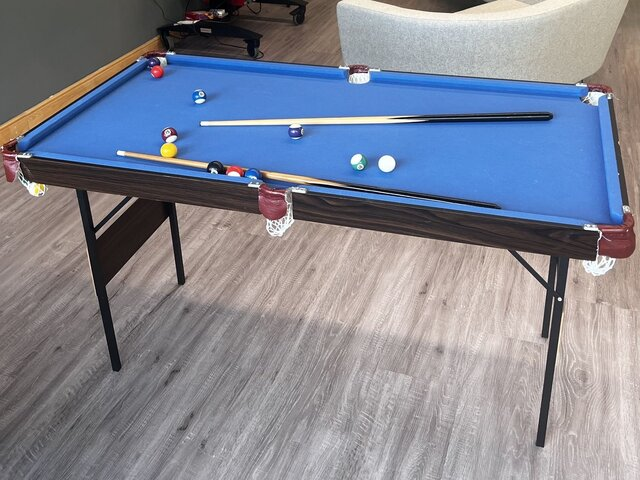
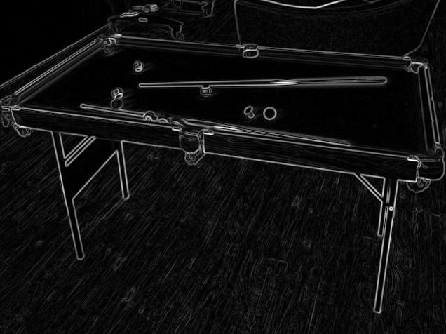

Tensor aliasing tutorial
This tutorial builds on the previous Converting and deploying a PyTorch model tutorial. The tutorial describes tensor aliasing by showing you how to implement edge detection with Sobel filtering. This tutorial also demonstrates how to implement image filtering using tensor operations.
 {kind=link}
{kind=link}
1. The ML SDK Scenario Runner accepts an image in DDS format. It does not accept images in common formats,
for example, .jpg or .png. To convert a .jpg or .png image to DDS format,
use the following save_image_to_dds.py script:
#
# SPDX-FileCopyrightText: Copyright 2024-2025 Arm Limited and/or its affiliates <open-source-office@arm.com>
# SPDX-License-Identifier: Apache-2.0
#
import subprocess
import sys
import numpy as np
from PIL import Image
# Read from command line arguments
if len(sys.argv) != 4:
raise RuntimeError(
f"Expected 4 command line arguments (including python file name), got {len(sys.argv)}"
)
dds_exe_path = sys.argv[1]
image_in_path = sys.argv[2]
image_out_path = sys.argv[3]
# load .jpg image as NumPy array
img = np.asarray(Image.open(image_in_path))
print(img.dtype, img.shape)
height, width, channel = img.shape
# convert image data type to float32 and add alpha channel
img = img.astype("float32").reshape((-1, 3))
alpha = np.ones((img.shape[0], 1), dtype="float32") * 256
img = np.hstack((img, alpha))
print(img.dtype, img.shape)
# write DDS header into .dds file
subprocess.run(
[
dds_exe_path,
"--action",
"generate",
"--height",
str(height),
"--width",
str(width),
"--element-dtype",
"f32",
"--element-size",
"16", # RGBA each takes 4 bytes
"--format",
"DXGI_FORMAT_R32G32B32A32_FLOAT",
"--output",
image_out_path,
"--header-only",
],
check=True,
)
# write image data into .dds file
with open(image_out_path, "ab") as file:
file.write(img.tobytes())
The script requires 3 arguments:
The path to the binary program called
dds_utils, which is built as part of the ML SDK Scenario Runner.The input image, for example,
PoolTable.jpg.The output image name, for example,
PoolTable.dds.
Use the dds_utils tool from ML SDK Scenario Runner to generate the file:
python save_image_to_dds.py \
dds_utils \
PoolTable.jpg \
PoolTable.dds
The script generates a PoolTable.dds file that the ML SDK Scenario Runner can use.
2. To create the model in Pytorch, and use ExecuTorch to convert the model to VGF format, run the following
SobelFiltering.py:
#!/usr/bin/env python3
#
# SPDX-FileCopyrightText: Copyright 2024-2025 Arm Limited and/or its affiliates <open-source-office@arm.com>
# SPDX-License-Identifier: Apache-2.0
#
import torch
import torch.nn as nn
import torch.nn.functional as F
from executorch.backends.arm.vgf import VgfCompileSpec
from executorch.backends.arm.vgf import VgfPartitioner
from executorch.exir import EdgeCompileConfig
from executorch.exir import to_edge_transform_and_lower
image_height = 480
image_width = 640
# Sobel filter definitions
def get_sobel_filters():
x_filter = torch.tensor(
[[-1, -2, 0, 2, 1]], dtype=torch.float32
).t() @ torch.tensor([[1, 4, 6, 4, 1]], dtype=torch.float32)
y_filter = torch.tensor([[1, 4, 6, 4, 1]], dtype=torch.float32).t() @ torch.tensor(
[[-1, -2, 0, 2, 1]], dtype=torch.float32
)
return x_filter.view(1, 1, 5, 5), y_filter.view(1, 1, 5, 5)
# Define model
class SobelFilteringModel(nn.Module):
def __init__(self):
super(SobelFilteringModel, self).__init__()
x_filter, y_filter = get_sobel_filters()
self.conv_x = nn.Conv2d(4, 1, 5, bias=False)
self.conv_y = nn.Conv2d(4, 1, 5, bias=False)
with torch.no_grad():
self.conv_x.weight.zero_()
self.conv_y.weight.zero_()
self.conv_x.weight[:, :3, :, :] = x_filter
self.conv_y.weight[:, :3, :, :] = y_filter
def forward(self, x):
x = x.permute(0, 3, 1, 2)
gx = self.conv_x(x)
gy = self.conv_y(x)
return torch.sqrt(gx**2 + gy**2).permute(0, 2, 3, 1)
# Generate test input
example_input = torch.randn(1, image_height, image_width, 4)
model = SobelFilteringModel().eval()
# Save the VGF model
compile_spec = VgfCompileSpec()
compile_spec.dump_intermediate_artifacts_to(".")
partitioner = VgfPartitioner(compile_spec)
exported_program = torch.export.export_for_training(model, (example_input,))
to_edge_transform_and_lower(
exported_program,
partitioner=[partitioner],
compile_config=EdgeCompileConfig(
_check_ir_validity=False,
),
)
python SobelFiltering.py
This generates a VGF file ${NAME}.vgf, where ${NAME} is generated by the tool.
Note
image_height and image_width parameters are hard-coded in this script
based on the input image in the previous step.
To generate the Scenario Template, use the VGF file:
vgf_dump --input sobel_filtering.vgf --output scenario.json --scenario-template
Note
For more information about this command, see Converting and deploying a PyTorch model tutorial.
Modify the Scenario Template:
To include the image input that you want to use, add a section under resources before the section for
input_0_reftensor resource:
{ "image": { "dims": [ 1, 640, 480, 1 ], "format": "VK_FORMAT_R32G32B32A32_SFLOAT", "shader_access": "readonly", "src":"PoolTable.dds", "uid": "input_image", "memory_group": { "id": "group0" } } }
Replace the
srcentry ininput_0_reftensor resource with the memory group set togroup0. The resource description of this tensor resource should look like the following code:
{ "tensor": { "dims": [ 1, 480, 640, 4 ], "format": "VK_FORMAT_R32_SFLOAT", "shader_access": "readonly", "memory_group": { "id": "group0" }, "uid": "input_0_ref" } }
Replace
TEMPLATE_PATH_TENSOR_OUTPUT_0withoutput.npy.
To run the scenario, use the ML SDK Scenario Runner:
scenario-runner --scenario scenario.json
To convert the result into a
.jpgimage, run the following code:
#
# SPDX-FileCopyrightText: Copyright 2024 Arm Limited and/or its affiliates <open-source-office@arm.com>
# SPDX-License-Identifier: Apache-2.0
#
import numpy as np
from PIL import Image
grayscale = np.load("output.npy")[0, :, :, 0]
grayscale = np.interp(grayscale, (np.min(grayscale), np.max(grayscale)), (0.0, 256.0))
im = Image.fromarray(grayscale.astype("uint8"))
im.save("output.jpg")